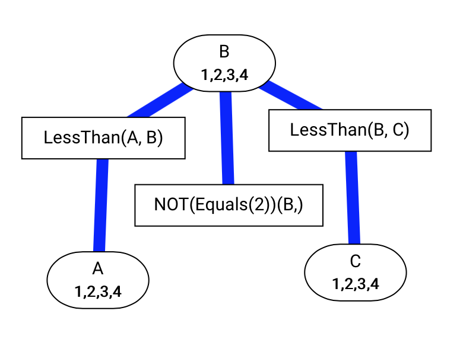

We recommend to use JupyterLab for AISpace2.
JupyterLab is based on and very similar to Jupyter Notebook,
a web-based and interactive computing notebook environment. If this is your first time using JupyterLab and you have not used Jupyter Notebook before,
we particularly recommend taking a look at the following links first to quickly get up to speed:
Fine Step: Advance the procedure to next fine step.
Step: Advance the procedure to next step.
Auto Solve: Run the algorithm step by step until a solution is found.
Pause: Pause as soon as the current fine step has finished. Useful to stop auto solving.
Print Positions: TODO.
You can resize the height of the visualization by dragging the resize handle ()
in the bottom right corner. The width of the visualization can be changed by resizing the window. In either case, the
nodes will reposition themselves until they all fit on screen.
sleep_time: The time, in seconds, between each step in auto solving. Defaults to 0.2.
line_width: The thickness of edges, in pixels. Defaults to 4.0.
text_size: The fontsize of the text, in pixels. Defaults to 15.
detail_level: The detail level of the information shown on a node. 0=showing no text;
1=showing truncated text when the space is not enough; 2=always showing full text.
Defaults to 1.
The first parameter of each display() call is the display_level, which, depending on the
step button, controls when execution pauses. Fine Step button makes the execution pause each time a display()
statement is encountered; Step button makes the execution pause each time a display() with display_level2 or lower is encoutered;
Auto Solve button makes the exectution not pause at all. You can safely change the display_level to adjust the amount
of detail you receive. However, the visualization is entirely driven by the remaining parameters of the display() call, so modifying
them may break the visualization.
search_simple1: A simple search problem
search_simple2: Another simple search problem
search_edgeless: A search problem where there are no edges
search_acyclic_delivery: A robot delivery problem that has no cycles
search_cyclic_delivery: A robot delivery problem that has cycles
show_edge_costs: If True, shows the cost of each edge along the line. Defaults to True.
show_node_heuristics: If True, show the node's heuristic value (h-value) inside the node.
Defaults to False.
layout_method: Controls how the nodes in the graph are positioned. Either "force", which
is a general graph layout algorithm that works on graphs of all types, or "tree", if you know the resulting
graph is always tree-shaped. Defaults to
"force".
Three tools are provided for solving constraint satisfaction problems (CSPs): arc consistency algorithm, converting CSP to a search problem, and stochastic local search (SLS).
— the arc needs to be checked to see whether it is arc consistent.
— the arc is arc consistent.
— the arc is not arc consistent.
You can click on any blue or red arc to perform arc consistency on that arc. When you use Fine Step, Step, Auto Arc Consistency or
Auto Solve buttons, a random arc is chosen. After arc consistency is finished, the domain will be slipt. You can click a node to split its domain
if it is not in auto solving mode.
csp_simple1: A simple CSP

csp_simple2: Another simple CSP
csp_extended: A more complex CSP
csp_crossword1: A crossword that represents word positions as variables
csp_crossword2: Another crossword that represents word positions as variables
csp_crossword2d: A crossword that represents squares as variables
We have included 6 planning problems in STRIPS representation. 3 of them model a robot delivery system: strips_simple1, strips_simple2
and strips_simple3; the other 3 model a block world: strips_block1, strips_block2
and strips_block3. Since it is hard to present the problems as graphs, you may view the detail of them in AISpace2/aipython/stripsProblem.py.
A Bayesian Network (BN) provides a model of conditional dependence among a set of random variables. You can make observations and query for the probabilities in our BN.
bn1: A simple Bayesian Network problem
bn2: A Bayesian Network modeling the fire alarm system
bn3: A Bayesian Network modeling the sprinkler system
bn4: A Bayesian Network where domains have more than 2 values
AISpace is a set of Java applets for learning and exploring concepts in artificial intelligence. They can be downloaded and
run locally. AISpace2, an open source projecte and the next generation of AISpace, is an extension for Jupyter and contains a set of Jupyter notebooks,
which can be run in the browser.
Both AISpace and AISpace2 use similar visualizations, but in AISpace the user was not able to see the code and might have hard time understanding
what is going on in the background. AISpace2 aims to integrate the code with interactive visualizations that are easy for students to extend and allow students to modify the AI algorithms.
In order to make this process more smoothly, in AISpace2 we separate the algorithms (inside ./aipython/) from visualizations (inside ./aispace2/ and ./js/) and
the user can refer to and change the algorithms when they want to.
AIPython is the Python code for the pseudocode found inside the accompanying textbook;
it can run independently without AISpace2 and Jupyter. AISpace2 takes the code from AIPython and enhances it to work inside Jupyter, allowing for a more
easily understandable and friendly user interface and rich visualizations to accompany code.
In order to make this possible, 2 major modifications have to be made in AIPython, which make the source code you find in AISpace2 not exactly the same as AIPython.
The 2 changes are summarized below. Apart from these 2 modifications, other things are almost identical.
The addition of the @visualize decorator: All functions that you call directly on the instance
to be visualized in Jupyter Notebook must have their definitions annotated with @visualize. For example,
if we had the following class:
and there was a cell inside Jupyter Notebook like this:
e=Example()e.foo()
Then foo() would have to be annotated with @visualize, because it is called directly on the instance inside a cell; but
bar() wouldn't need to be annotated, because it is only called indirectly by foo(). Annotating
foo() is as simple as adding a single line right above the declaration:
@visualizedeffoo(self):self.bar()print('foo')
On the other hand, if you also wanted to call e.bar() directly (either in the same cell or another),
you would have to also add @visualize to bar as well.
The reason why this is necessary is to support interacting with visualizations. AISpace2 needs to know which functions
will drive the visualization, so that it can set things up correctly.
Change in imports: Displayable subclasses inherit from aipython.utilities.Displayable in
AIPython, but inherit from aispace2.jupyter.* inside AISpace2, where * depends on the
algorithm being visualized (e.g. * can be search or csp).
The @visualize decorator is also imported from aispace2.jupyter.*.
The reason why this change is necessary is that these specialized Displayable classes have hooks that
allow it to be displayed inside Jupyter.
Jupyter Notebook is a web application for interactive notebook document format
which combine explanatory text, mathematics, computations and their rich media output. JupyterLab
is the next generation of Jupyter Notebook, and it is served from the same server and uses the same notebook document format as the classic Jupyter Notebook.
JupyterLab enables you to work with documents and activities such as Jupyter notebooks, text editors, terminals, and custom components in a more flexible, integrated, and extensible manner.
Moreover, JupyterLab has a side file explorer and you can arrange multiple documents and activities side by side in the work area using tabs and splitters.
Given these convenience functionalities supported by JupyterLab, we recommend using JupyterLab, instead of Jupyter Notebook, for our AISpace2.
According to the documentation, JupyterLab will eventually replace the classic Jupyter Notebook (see here).
For more information, please refer to the official documentations.